Data Science for Electron Microscopy
Week 6: CNNs for microscopy images
FAU Erlangen-Nürnberg
Institute of Micro- and Nanostructure Research


Recap: Week 5 and today’s question
- Week 5: neural networks from first principles — perceptrons, MLPs, XOR, ReLU, backprop via autograd, vanishing gradients.
- Core insight: a network is loss minimisation by gradient descent on a composition of learnable maps.
- Gap: MLPs flatten every image into a 1-D vector. A 1024×1024 HAADF image → one dense layer with 1000 neurons already has one billion weights — and the model treats the top-left pixel and the bottom-right pixel as completely unrelated inputs.
- Today’s question: how do we build spatial structure into the architecture so that the network knows that nearby pixels are related, that the same feature can appear anywhere, and that features are hierarchical?
- Answer: convolutional neural networks (CNNs).
Road map and self-study
- Road map: recap Week 5 + today’s question (2) · why MLPs fail on images (4) · convolution as a sliding feature detector (5) · kernels as edge/texture detectors (4) · stride, padding, channels (2) · weight sharing and translation equivariance (4) · pooling and downsampling (3) · receptive field and feature hierarchy (3) · CNN architectures: LeNet → AlexNet → ResNet (4) · U-Net for segmentation (3) · EM case study: phase and grain segmentation (6) · practicalities and failure modes + Week 7 preview (3).
- Self-study:
notebooks/week06_cnn_inference.ipynb— apply hand-set kernels (Sobel, Laplacian, Gaussian) to a synthetic grain image; inspect feature maps; run a tiny random CNN forward pass; design a kernel to detect a specific boundary type. No training. Fast on CPU.
The parameter explosion: a concrete count
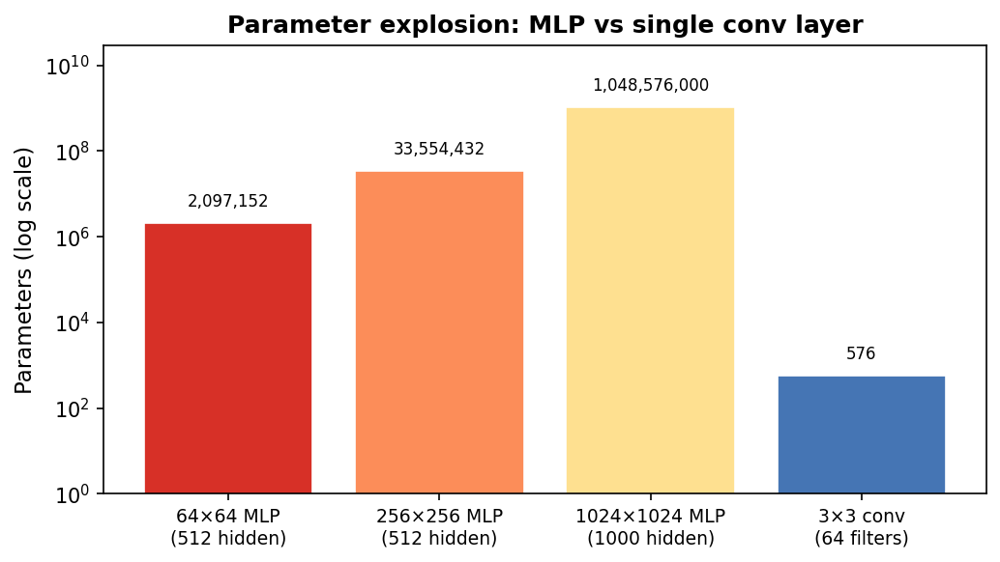
MLP parameter count vs a single convolutional layer for images of increasing size. Note the log scale. A 1024×1024 image with 1000 hidden neurons requires ~10⁹ weights; 64 conv filters of size 3×3 require only 576.
MLPs destroy spatial structure
- An MLP flattens the image: pixel (0,0), pixel (0,1), pixel (0,2), …, in row-major order.
- After flattening, the model treats pixel (100,100) and pixel (200,200) as completely unrelated input coordinates — no notion of “next to each other.”
- Physics says the opposite: a grain boundary is a spatially local feature. An atomic column’s contrast depends on its immediate neighborhood, not on pixels in a different part of the image.
- Result: the MLP must relearn the same edge detector at every possible image location — and then relearn it again if the same feature appears at a different size.
The translation problem: why position should not matter
- If a precipitate moves 5 pixels to the right, the MLP sees a completely different input vector.
- Every weight connected to the old location is now irrelevant; the model must have independently learned the same precipitate pattern at every position.
- This is physically absurd: a precipitate is a precipitate regardless of where it sits in the field of view.
- What we want: a feature detector that fires whenever the precipitate appears — regardless of location.
- This property is called translation equivariance: shift the input → the feature response shifts by the same amount.
Summary: three failures of MLP on images
| Problem | MLP behaviour | CNN fix |
|---|---|---|
| Parameter explosion | \(D \times M\) weights per layer | \(k_h k_w C_{out} C_{in}\) kernel weights |
| No spatial structure | All pixels treated equally | Local receptive field: inspect \(k \times k\) patch |
| No translation awareness | Relearn at every location | Weight sharing: one kernel applied everywhere |
CNNs are MLPs with locality and weight sharing built in as hard constraints.
Convolution: one idea, three properties at once
- Take a small kernel (e.g. 3×3 weights).
- Slide it across the image, pixel by pixel.
- At each position: multiply the kernel by the overlapping image patch, element-wise, and sum → one output value.
- The output is a feature map: a new image where each pixel encodes how strongly the kernel’s pattern appeared at that location.
- One kernel produces one feature map. Multiple kernels in parallel → multiple feature maps.
The sliding-window operation step by step

Two-dimensional cross-correlation (the operation CNNs actually use). The 3×3 kernel slides one position at a time. At each position, nine element-wise multiplications are summed to give one output value. The output grid records the detector response at every spatial location.
Convolution on a synthetic grain image
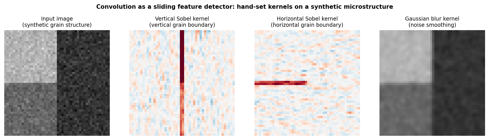
Convolution applied to a synthetic two-grain microstructure. Left: input image (two grains with different intensities, separated by vertical and horizontal boundaries). Centre-left: vertical Sobel kernel responds strongly at the vertical grain boundary. Centre-right: horizontal Sobel responds at the horizontal boundary. Right: Gaussian blur smooths noise. All kernels are 3×3; weights are hand-set, not trained.
The discrete convolution formula
For input image \(I\) and kernel \(K\):
\[ (I \star K)_{m,n} = \sum_{a=-\Delta}^{\Delta}\sum_{b=-\Delta}^{\Delta} K_{a,b}\,I_{m+a,\, n+b} \]
- \(K\) is a small matrix (typically \(3\times3\) or \(5\times5\)); \(\Delta = (k-1)/2\).
- At each output position \((m,n)\): dot product of the kernel with the local image patch.
- Parameter count: \(k^2\) weights — independent of image size \(H \times W\).
- The same \(k^2\) weights are applied at every \((m,n)\) → weight sharing.
Kernels as feature detectors
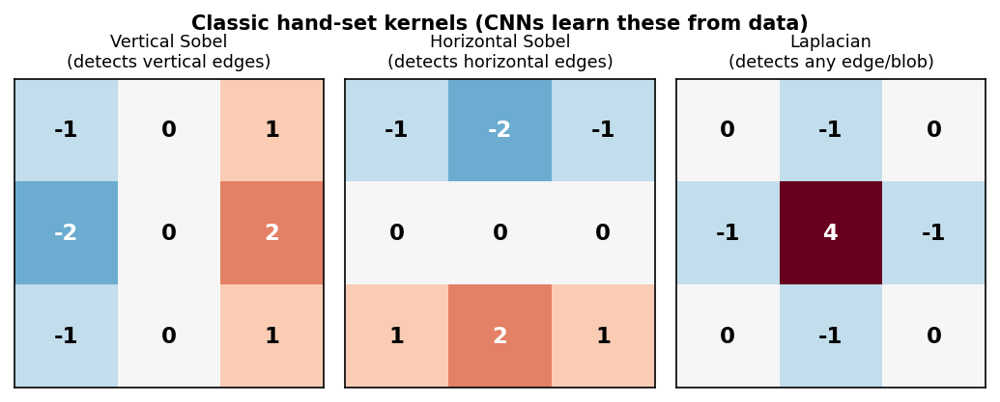
Three classic 3×3 kernels. Left: vertical Sobel — responds to left–right intensity changes. Center: horizontal Sobel — responds to top–bottom changes. Right: Laplacian — responds to any local intensity peak or boundary. Numbers are the kernel weights.
In a trained CNN, the network discovers these (and more complex) filters automatically from labelled examples — no manual kernel design needed.
Stride and padding: controlling output size
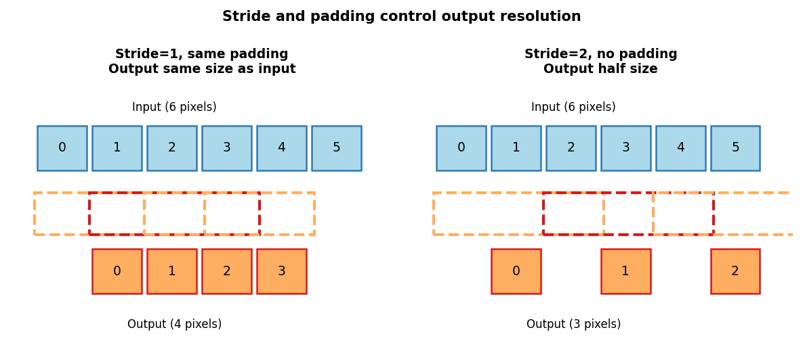
Stride=1 with same-padding (left): the kernel moves one pixel at a time and output is the same size as input. Stride=2 (right): the kernel skips every other position, halving spatial resolution.
- Padding (same): add zeros around the border → output size = input size. Standard in most segmentation architectures.
- Stride \(s\): move the kernel \(s\) pixels per step → output size \(\approx H/s\).
- A 3×3 kernel with padding=1, stride=1 keeps height and width: \(H_{out} = \lfloor(H+2-3)/1\rfloor+1 = H\).
Multiple channels: depth in the tensor
- A grayscale image has 1 channel: \(H\times W\times 1\).
- After a layer with \(C_{out}\) kernels: \(H_{out}\times W_{out}\times C_{out}\) (one feature map per kernel).
- A full convolutional layer kernel has shape \(C_{out}\times C_{in}\times k_h\times k_w\).
- Total parameters: \(C_{out}(C_{in}k_hk_w + 1)\) including biases — still independent of \(H, W\).
- EM multichannels: hyperspectral EELS/EDS maps (spatial × energy), multi-segment detector images, RGB-like stacks of different contrast modes.
Output shape formula: a practical checklist
For input \(C_{in}\times H\times W\), kernel size \(k\), padding \(p\), stride \(s\):
\[ H_{out} = \left\lfloor\frac{H + 2p - k}{s}\right\rfloor + 1 \]
- Same convolution (preserve size): \(k=3, p=1, s=1\) → \(H_{out}=H\).
- Strided downsampling: \(k=3, p=1, s=2\) → \(H_{out}\approx H/2\).
- Parameter count: \(C_{out}(C_{in}k^2 + 1)\) — depends on channels and kernel size, NOT image size.
- Active check: \(H=64, k=3, p=1, s=1\) → \(H_{out}=(64+2-3)/1+1=64\). ✓
- After two stride-2 layers: \(H_{out}=64/4=16\); after four: \(H_{out}=64/16=4\).
Weight sharing: the key efficiency principle
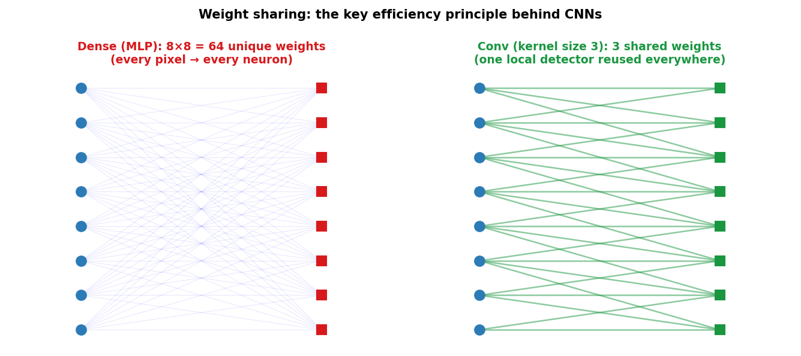
Dense layer (left): every input node connects to every output node — \(n_{in} \times n_{out}\) unique weights. Conv layer (right): the same 3-weight kernel connects each output node to only a local neighborhood of inputs — 3 shared weights total (for the 1-D case shown).
Translation equivariance as an inductive bias
- Translation equivariance: if the input shifts by \(\delta\) pixels, the feature map shifts by \(\delta\) pixels — the detector response follows the feature.
- Formally: \(f(T_\delta X) = T_\delta f(X)\) where \(T_\delta\) is a spatial shift and \(f\) is a convolutional feature extractor.
- This is the correct prior for most microscopy tasks: a precipitate is a precipitate wherever it appears.
- Translation invariance (different!): the final prediction does not change if the input shifts. Built gradually via pooling, striding, and global average pooling — not by convolution alone.
Equivariance preserves “where.” Invariance discards “where” and keeps only “what.”
Inductive bias: encoding what you know
- An inductive bias is an assumption baked into the architecture that makes certain functions easy to learn.
- Dense MLP: no spatial bias — every function of all pixels is equally easy.
- CNN: locality + weight sharing make spatially local, translation-equivariant functions easy.
- Strong inductive bias helps with small datasets by ruling out physically unreasonable solutions.
- Weak inductive bias requires more data to learn the right structure from scratch.
Pooling: summarising local responses
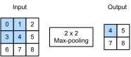
Max-pooling with a 2×2 window. For each non-overlapping 2×2 region, keep the maximum value. Spatial resolution halves in each dimension; channel count is unchanged.
- Max pooling: keep the strongest activation in each local window. Answers: “did this feature appear here?”
- Average pooling: compute the mean. Answers: “how strongly was this feature present overall?”
- No learned parameters — purely deterministic aggregation.
- \(2\times2\) max-pool: halves height and width, doubles the effective receptive field of later layers.
Max pooling: a worked example
Input feature map (4×4):
\[ \begin{pmatrix} 1 & 3 & 2 & 4 \\ 5 & 6 & 7 & 8 \\ 3 & 2 & 1 & 0 \\ 1 & 2 & 3 & 4 \end{pmatrix} \]
After 2×2 max-pool (stride 2):
\[ \begin{pmatrix} 6 & 8 \\ 3 & 4 \end{pmatrix} \]
Top-left 2×2 block: \(\max(1,3,5,6)=6\). Top-right: \(\max(2,4,7,8)=8\).
- Output size: \(2\times2\) from \(4\times4\) — spatial dimensions halved.
- No learned parameters — purely a max operation.
- Approximate invariance: if the 6 moved to the adjacent cell (still in the same 2×2 window), the output is unchanged.
Pooling in practice: the Conv–Pool block
- Standard building block: Conv → ReLU → MaxPool.
- After \(L\) such blocks (each with stride-2 or 2×2 pool): spatial size is \(H/2^L \times W/2^L\).
- Channels typically double at each stage: 64 → 128 → 256 → 512.
- Example: 256×256 input through 4 blocks → 16×16 feature maps with 512 channels.
| Block | Channels | Spatial size (from 256×256) |
|---|---|---|
| 1 | 64 | 128×128 |
| 2 | 128 | 64×64 |
| 3 | 256 | 32×32 |
| 4 | 512 | 16×16 |
Receptive fields: how much context does one neuron see?
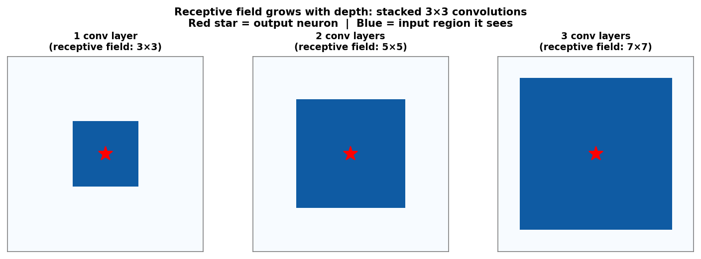
Receptive field of a single output neuron grows with depth. One 3×3 conv layer: 3×3 input region. Two stacked layers: 5×5 region. Three layers: 7×7 region. Red star marks the output neuron; blue region is its receptive field in the input image.
Feature hierarchy: edges → motifs → structures → properties
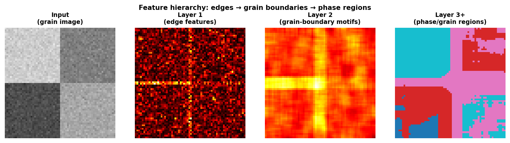
Feature hierarchy on a synthetic grain microstructure. Input (left): two-grain image with boundaries. Layer 1 (centre-left): Laplacian-like edge features highlight all boundaries. Layer 2 (centre-right): neighbourhood-level grain-boundary motifs. Layer 3+ (right): coarse phase/grain-region labels.
Summary: how locality, sharing, and hierarchy combine
| Design choice | What it encodes | EM benefit |
|---|---|---|
| Local receptive field | Features depend on local context | Grain boundaries are local |
| Weight sharing | Same feature appears at many positions | Atomic columns repeat |
| Multiple channels | Many detectors in parallel | Multi-contrast detection |
| Stride / pooling | Coarser scale, larger context | Phase-level reasoning |
| Depth / nonlinearity | Hierarchical feature composition | Atoms → grains → phases |
CNN architectures in one breath: the arc from 1998 to 2015
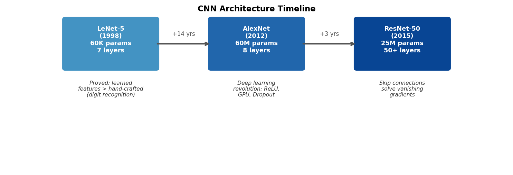
Timeline from LeNet (1998) to AlexNet (2012) to ResNet (2015). Each box states the year, approximate parameter count, depth, and key innovation. Read left to right as increasing depth, scale, and capability.
LeNet: the CNN template
- LeNet-5 LeCun, Yann et al., (1998): two convolutional layers, two pooling layers, three dense layers.
- ~60,000 parameters — tiny by modern standards.
- Proved for the first time that a learned feature extractor could outperform hand-crafted features (SIFT, HOG) on a real vision task.
- The template: Conv → Activation → Pool → Conv → Activation → Pool → Flatten → FC → FC → Output.
- This exact recipe still appears in CNN classifiers for materials micrographs today — often with deeper variants.
AlexNet: the deep learning revolution Krizhevsky, Alex et al., (2012)
- AlexNet (2012): won the ImageNet Large Scale Visual Recognition Challenge by 10 percentage points over the second-place hand-crafted pipeline.
- Key innovations (each still used today):
- ReLU activation: faster convergence, no vanishing gradient for \(z > 0\) (from Week 5).
- Dropout: randomly zero out neurons during training → prevents co-adaptation, reduces overfitting.
- GPU training: made deep networks with 60 million parameters computationally feasible.
- Opened the “deep learning era” — almost every subsequent architecture follows the AlexNet pattern with improvements.
ResNet: skip connections solve vanishing gradients He, Kaiming et al., (2016)
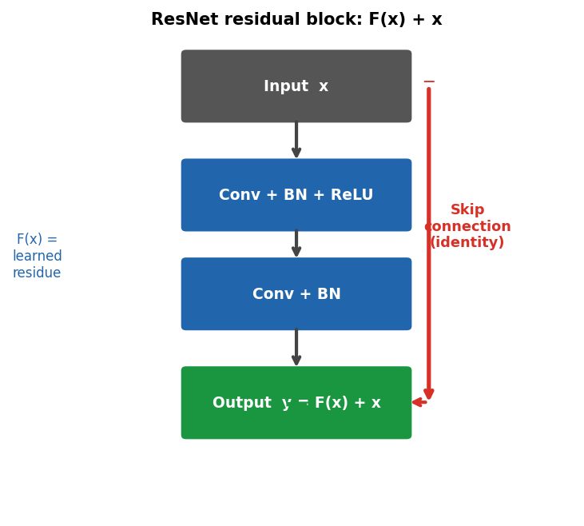
ResNet residual block. The main path learns a residual function F(x) = y − x. The skip connection adds the input x directly to the output. During backpropagation, gradients flow through the skip path without attenuation — solving the vanishing gradient problem for 50+ layer networks.
\[\mathbf{y} = F(\mathbf{x}) + \mathbf{x}\] Instead of learning the target \(\mathbf{y}\), learn the residual \(F(\mathbf{x}) = \mathbf{y} - \mathbf{x}\).
U-Net: encoder–decoder for segmentation Ronneberger, Olaf et al., (2015)
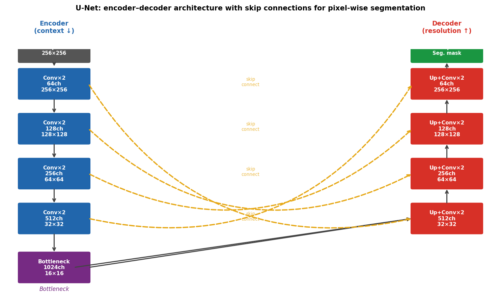
U-Net architecture. Left column (blue): encoder — successive Conv+Pool blocks extract features while halving spatial resolution and doubling channel count. Right column (red): decoder — successive upsample+Conv blocks restore spatial resolution. Yellow dashed arrows: skip connections concatenate encoder features into corresponding decoder levels.
U-Net: encoder, bottleneck, decoder
Encoder path
- Conv × 2 → ReLU → MaxPool (stride 2).
- Repeat 4 times: spatial halves, channels double.
- Each level captures increasing context.
- Similar to a standard classification CNN encoder.
Decoder path
- Upsample (bilinear or transposed conv) → concatenate skip.
- Conv × 2 → ReLU.
- Repeat 4 times: spatial doubles, channels halve.
- Final 1×1 conv → class probabilities per pixel.
Why skip connections are non-negotiable for segmentation: without them, precise boundary locations are lost in the bottleneck compression; the output mask is correct in texture but blurry in boundary position.
U-Net output: per-pixel classification
- Input: \(C\times H\times W\) (image or multi-channel tensor).
- Output: \(K\times H\times W\) (K class probability maps, same resolution as input).
- At inference: \(\arg\max\) over the \(K\) channels gives the segmentation mask.
- Loss: cross-entropy at every pixel, summed or averaged over the image.
- The loss is differentiable → same backprop + Adam optimisation as any other network.
EM case study 1: Au nanoparticle phase segmentation
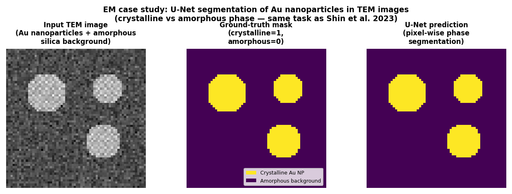
U-Net applied to TEM images of Au nanoparticles on an amorphous support. Left: input TEM image (representative Au-nanoparticle-on-amorphous-support TEM segmentation task). Centre: ground-truth binary mask (crystalline=bright, amorphous=dark). Right: U-Net prediction — pixel-wise classification matching the ground truth closely.
U-Net TEM segmentation: published results

U-Net segmentation of TEM images from a published materials science application. The encoder–decoder with skip connections accurately reproduces phase boundaries, even in noisy low-dose images where the boundary is only 1–3 pixels wide.
EM case study 2: Grain boundary segmentation from synthetic training data
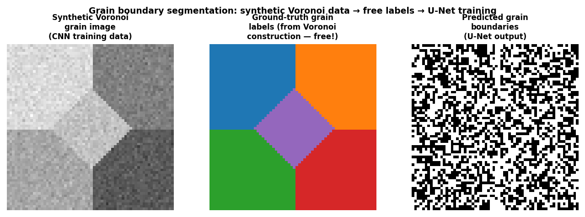
Grain boundary segmentation pipeline. Left: synthetic Voronoi grain image (used for CNN training). Centre: automatically generated ground-truth grain labels (free — no expert annotation). Right: U-Net predicted grain boundaries from the output mask.
Synthetic-to-real transfer: Voronoi → SEM grain maps

CNN grain segmentation applied to a real SEM polycrystal image. The network was trained only on synthetic Voronoi grain images (with perfect free labels), yet it correctly identifies grain boundaries in the real SEM image — demonstrating that the topological signature of boundaries transfers from synthetic to real data.
EM case study 3: CNN feature hierarchy for microstructure classification
- Task: classify TEM micrographs by microstructure type or material phase.
- How: use a pretrained CNN as a feature extractor — mechanics in Week 7.
Quantitative example: parameter savings and labelling cost
- A \(3\times3\) conv layer with 64 input and 128 output channels: \(128 \times (64 \times 9 + 1) = 73{,}856\) parameters.
- A dense layer on a \(256\times256\) image with 128 outputs: \(256^2 \times 128 = 8{,}388{,}608\) parameters — 114× more.
- A compact four-level U-Net (32→64→128→256 channels) for 256×256 binary segmentation: ~7.8 million parameters. The original Ronneberger et al. U-Net is ~30 million parameters.
- A 256×256 dense prediction MLP would need hundreds of millions of parameters per layer.
- Labelling cost: training a U-Net from scratch on EM data typically requires 50–200 carefully annotated images. Transfer learning (Week 7) can reduce this to 20–50.
Failure modes of CNNs in EM applications
- Domain shift: a CNN trained on HAADF images from one microscope fails on HAADF images from a different microscope with a different contrast transfer function or detector geometry. Solution: retrain on the target instrument or use domain adaptation.
- Beam damage artefacts: a CNN trained on undamaged samples may misclassify beam-damage artefacts as phase boundaries. Always inspect predictions qualitatively.
- Scale sensitivity: a CNN trained on 0.1 nm/pixel resolution misclassifies images at 0.5 nm/pixel. Always match training and inference resolution.
- Out-of-distribution inputs: a U-Net trained on grain boundaries gives nonsense output on a completely different microstructure type. Check training data coverage.
Practical checklist for CNN-based EM analysis
- Match resolution: train and infer at the same pixel size.
- Honest validation: use
GroupKFoldby specimen or microscopy session — not random splits. - Inspect qualitatively: always look at predicted masks on held-out images before reporting metrics.
- Report IoU and Dice, not accuracy: for segmentation on imbalanced masks (thin boundaries vs large grains), accuracy is misleading.
- Start simple: a 4-layer U-Net with 32→64→128→256 channels often outperforms a 50-layer ResNet when \(N < 200\) labelled images.
Forward link: Week 7 — Beating small and expensive data
- Next week’s question: you have 30 labelled TEM images. How do you train a reliable CNN?
- Strategy 1 — Data augmentation: apply physically plausible image transformations (rotate, flip, add Poisson noise, crop, elastic deform) to multiply the effective training set size without new acquisitions.
- Strategy 2 — Transfer learning: start from a CNN pre-trained on ImageNet; the first layers’ edge and texture detectors transfer to EM images; only fine-tune the last layers on the target task.
- Strategy 3 — Synthetic microstructures: generate ground-truth-labelled training data via Voronoi (grains), random sphere packing (nanoparticles), or physics simulations.
- Today’s CNN mechanics are the prerequisite for all three strategies.
Continue
References

©Philipp Pelz - FAU Erlangen-Nürnberg - Data Science for Electron Microscopy